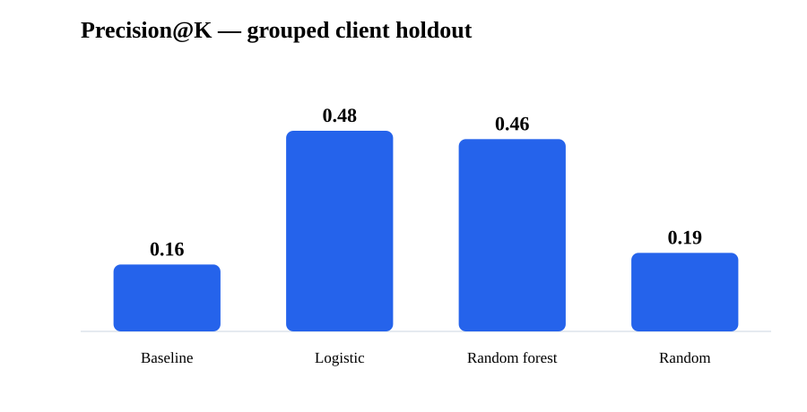
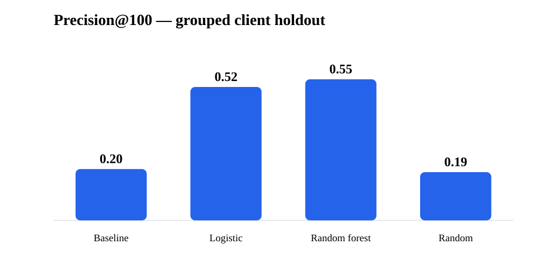
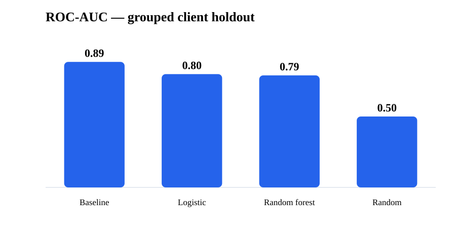

Abstract
This study asks whether a machine-learning score can improve the ordering of search-visible content items for a limited human review queue compared with a transparent position-aware CTR rule. I use the public-safe FlyRank pseudonymized warehouse release, aggregate March 2026 search-performance observations to a client-by-content decision grain, and define a same-window bottom-decile CTR-gap proxy as the development label. Logistic regression and random forest are evaluated using structural features only and a grouped client holdout, with precision@K as the primary decision metric and ROC-AUC as a secondary diagnostic. On the held-out clients, logistic regression reaches 0.48 precision@50 and 0.52 precision@100 versus 0.16 and 0.20 for the rule baseline, while the random forest is similar at 0.46 and 0.55; the baseline nevertheless has higher ROC-AUC (0.885), showing that overall discrimination and top-of-queue usefulness are not the same objective. The result supports a human-in-the-loop review queue and evidence-based prioritization, not a claim that a page is defective, that an edit will recover clicks, or that Google's ranking system can be predicted.
1. Introduction / Problem statement
Search teams have more potentially reviewable pages than they can inspect in a single cycle. A useful system therefore does not need to label every page perfectly; it needs to put the most decision-relevant candidates near the top of a finite queue.
The research question is: among pages with enough search exposure to matter, which items appear to under-capture clicks relative to their search-position context, and can a learned ranking improve the top of that review queue?
2. Data
The warehouse release is flyrank_pseudonymized_warehouse_release_v20260703, exported 2026-07-03. Its daily performance facts run through 2026-06-30 after a deliberate three-day freshness cutoff. The release contains dim_clients, dim_content, fact_content_daily_performance, and fact_content_query_90d; this lane primarily uses the daily performance fact and joins content metadata from dim_content.
For the final model comparison, the March 1–31, 2026 daily fact rows are filtered to records with GSC data available, aggregated by client and content item, and restricted to at least 150 impressions with a valid average position. This produces 91,974 visible client-content observations, with 85,429 in training and 6,545 in the grouped test split.
Identifiers are used only for joins and grouping and are excluded from model features. Raw client names, domains, URLs, titles, keywords, and private queries are not present in the released data and are not reproduced here. Future-window fields and product decision flags are also excluded from the model.
3. Methodology
Assumptions
- CTR should be interpreted in search-position context; comparing raw CTR across all positions would confound visibility with engagement.
- A fixed review queue makes top-K precision more decision-relevant than a single global accuracy number.
- The development label is a proxy for observed under-capture, not a causal outcome.
Features
The final feature set uses position_tier, word_count, content_type, main_intent, search_volume, and impressions. The model deliberately excludes ctr and ctr_gap, because using them would let the model read the answer directly.
Label definition
For the final Weeks 5–7 model, ctr_gap is a page's observed March CTR minus the median CTR of its March position tier. The positive class is the worst 10% of that gap distribution. This is a current-window screening proxy; it is not an observed post-intervention outcome.
Baseline
The baseline is the Week-4 transparent rule: prioritize negative position-tier CTR gaps while weighting the gap by impressions. It is intentionally simple and auditable. The same test observations and the same precision@K metric are used when comparing it with the models.
Validation design
A GroupShuffleSplit with random_state=42 and 25% test size holds entire clients out of training. The final split has zero client overlap: 31 training clients and 11 test clients. This avoids the optimistic result produced by a naive row-level split, where the same clients appear on both sides.
Leakage checks
A deliberate leakage attack that adds ctr_gap to the feature set drives AUC to 1.0, demonstrating why it must be excluded. The final feature set contains no label-derived feature, no future-window feature, and no product flag. The validation audit therefore treats the grouped split as the honest evaluation.
4. Results
The main result is about queue quality. The learned models put substantially more true proxy-priority items into the first 50–100 positions than the hand-written rule, even though the rule has stronger ROC-AUC over the full score range.
| Method | Precision@50 | Precision@100 | ROC-AUC |
|---|---|---|---|
| Rule baseline | 0.160 | 0.200 | 0.885 |
| Logistic regression | 0.480 | 0.520 | 0.799 |
| Random forest | 0.460 | 0.550 | 0.790 |
| Random / base-rate reference | 0.188 | 0.188 | 0.500 |



Because logistic regression and random forest are close across the decision metrics, the simpler logistic model is the preferred model to carry forward: it avoids unnecessary complexity and remains easier to inspect.
5. Limitations & honest framing
- Proxy label: the final supervised label is derived from the same March observation window. It should not be presented as a future recovery or intervention outcome.
- Cross-sectional evidence: the analysis measures associations in one monthly slice. It cannot establish that a title, meta change, or content edit causes higher CTR.
- Coverage: the review queue requires sufficient GSC exposure and therefore does not represent new/unpublished pages or clients without usable GSC data in the window.
- Known model weakness: error analysis shows some very-high-impression, large-gap pages receive low model probabilities. Those cases should remain a monitored soft spot.
- Public safety: the published artifact contains aggregate methodology and results only; it does not expose client identities, domains, URLs, titles, queries, or row-level examples.
6. Ranked recommendations
- Use the learned score to order a human review queue. The validated top-K result is strongest where review capacity is limited; logistic regression is the preferred simple model.
- Review high-reach underperformers first, but verify measurement. High exposure makes a prioritization more decision-relevant, yet unusually low CTR at strong positions can also indicate tracking or attribution problems.
- Apply a per-client concentration cap. The Week-7 top queue was highly concentrated; cap a weekly batch at roughly 10% from any one client so the queue remains portfolio-aware.
- Check missing fields before acting. Missing word count or search-volume fields should trigger manual review rather than automatic interpretation.
- Keep content changes human-approved. Do not auto-publish title/meta rewrites, and do not act on the provisional stale-content label until its point-in-time freshness data is trustworthy.
- Revalidate monthly. Treat precision@50 below about 0.30 as a stop-and-investigate signal, and re-run grouped-client validation before carrying the queue forward.
7. Reproducibility
This artifact is designed so a reviewer can trace the research from question to validation to action playbook.
- Repository — complete internship workspace.
- Notebook directory — Weeks 1–7 plus the capstone.
- Week 5 model — model/baseline comparison and error analysis.
- Week 6 validation audit — grouped split and leakage attack.
- Week 7 action playbook — ranked actions, human review rules, and monitoring.
- Capstone notebook — paper-aligned summary.
The final model comparison uses deterministic seeds (random_state=42). The gated warehouse is accessed during notebook execution; the public page does not embed or redistribute the private/gated data.
8. Acknowledgments & data credit
Built on the FlyRank ML Internship dataset. The research uses the pseudonymized warehouse release supplied for the internship and follows its public-safety constraints.
FlyRank — data source and internship context.
This artifact is an internship research exercise and should be read as a decision-support analysis rather than a production claim about search ranking behavior.